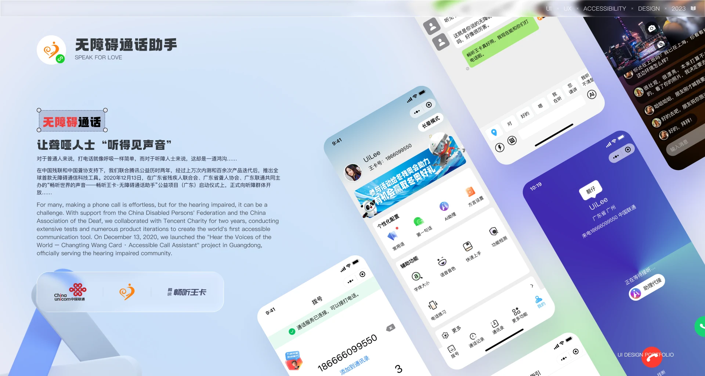
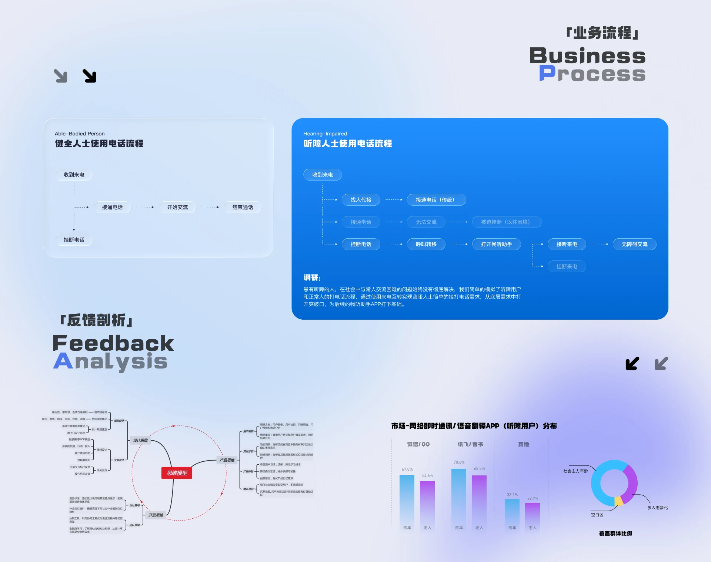
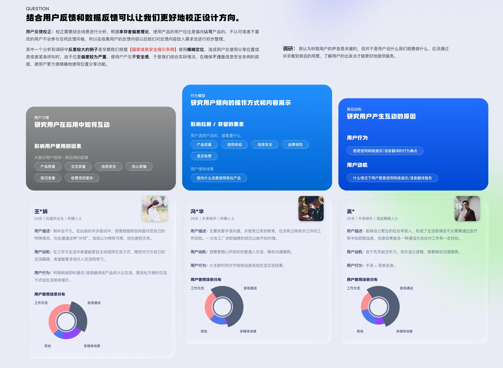
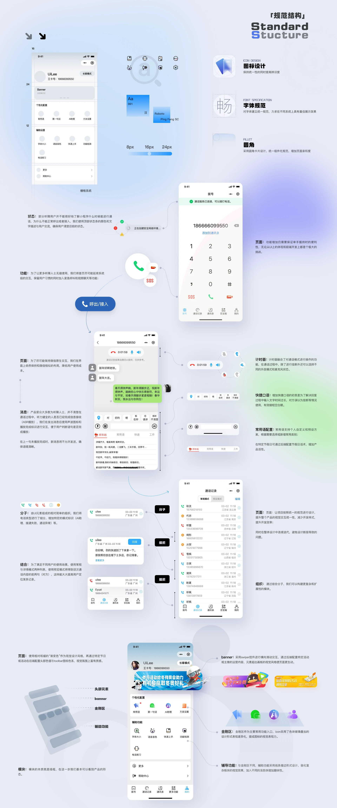
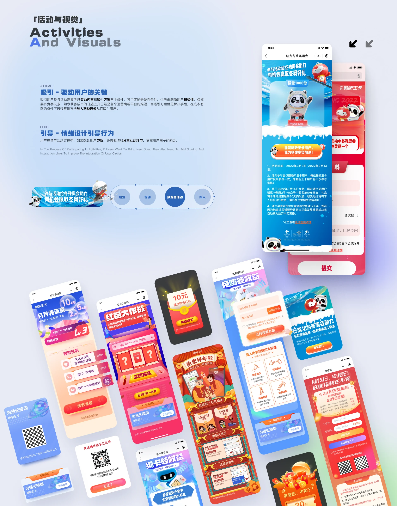

04 / 实验项目 / 2020.01 - 2023.05
小沃无障碍通话助手
让聋哑人士“听得见声音” （百万级用户 / ITU-D 收录项目）
项目背景
产品覆盖大陆地区 100W+ 听障人士，成果获联合国 ITU-D 国际电联报告收录； 主导设计的“畅听王卡”系列成为行业标杆，凭借极佳的无障碍体验，在残联及联通小沃内部获得高度认可，并取得 80W+ 核心活跃听障用户的实效成绩。
结合用户反馈和数据反馈可以让我们更好地校正设计方向
校正需要结合场景进行分析，根据幸存者偏差理论，使用产品的用户往往是偏向认可产品的，不认可或者不喜欢的用户不会参与任何反馈问卷，所以在收集用户的反馈内容以后我们对反馈内容放入需求池进行初步整理。 其中一个分析和调研中反差较大的例子是早期我们根据【国家信息安全指引条例】使用模糊定位，造成用户在使用分享位置信息或者紧急呼叫时，由于位置偏差较为严重，使用户产生不安全感，于是我们结合实际情况，在确保不违反信息安全条例的前提，使用户更方便精确地使用位置分享功能。
影响用户的因素分析
- 用户习惯
- 行为模型
- 背后动机
界面展示





其他作品
- 领克数云 · 全平台2024 - 2026
- KEKE · IP 设计2025.03
- 畅听助手 APP2020.01 - 2023.05
- Umeta 2.12023.07 - 2024.02
- Appleland Web2023.07-2024.02
- 模友圈2022.08 - 2023.01
- 智屏2021.07 - 2023.01
- 企业官网设计2020 - 2023
有项目要一起做？
可承接 UI/UX 设计外包与兼职合作：B 端后台与数据平台界面设计、微信小程序与移动端界面、无障碍与适老化设计、交互原型与设计规范交付，支持远程协作。
邮箱 965333099@qq.com ｜ 微信与手机同号 18666099550